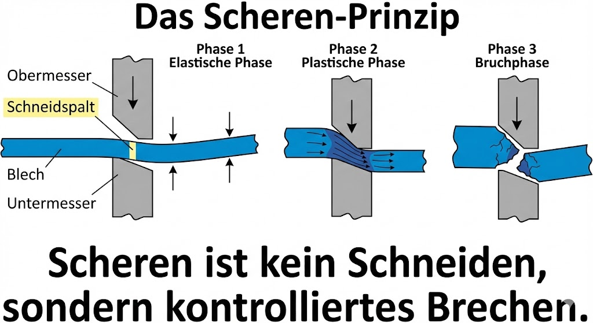
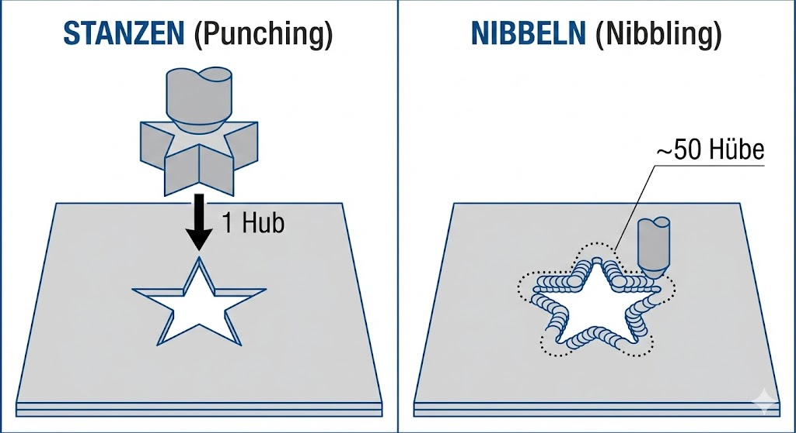
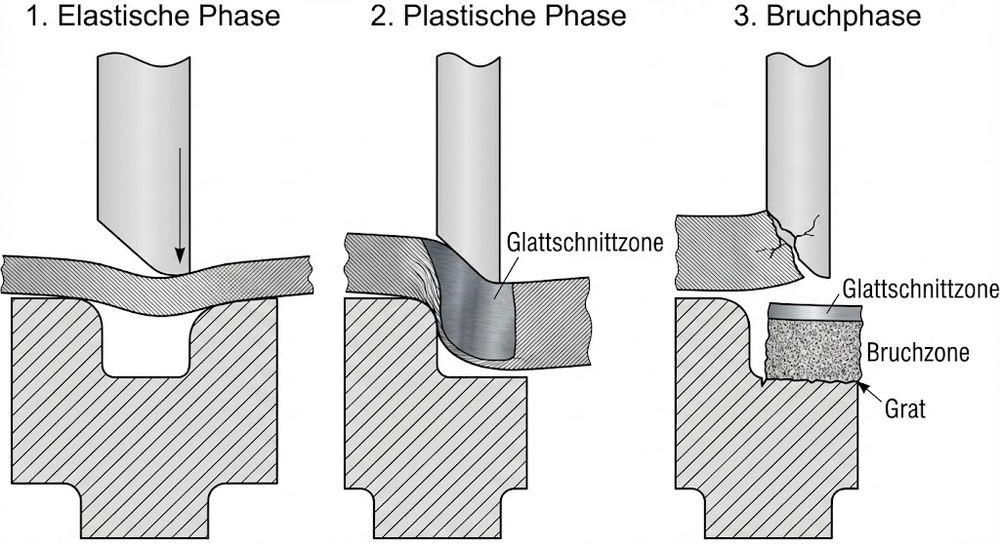
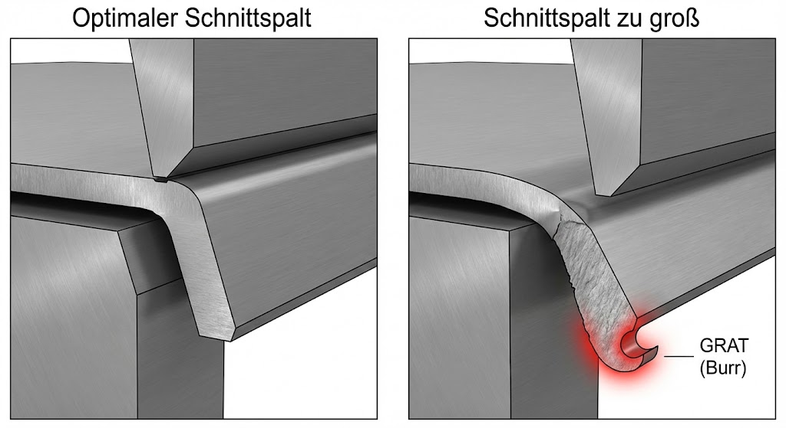
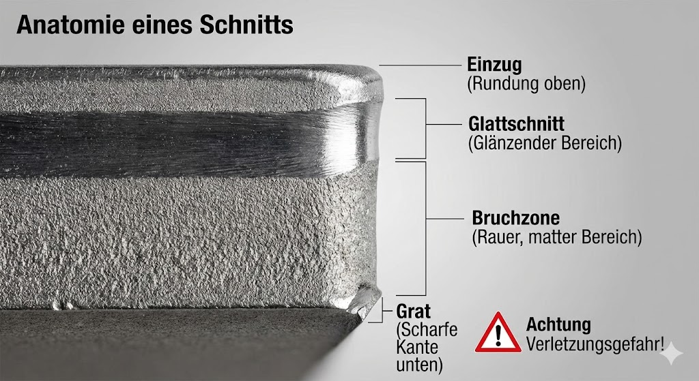

Skript-Bezug
TODO: Lege passende Bilder/Beispiele in LFB_mvp_hko/skript1/ ab (z.B. Schnittkante,
Grat, Stanzen/Nibbeln) und verlinke sie hier.

Theorie / Begriffe
Mechanische Trennverfahren
- Scheren: gerader Schnitt, typisch bei Blech/Profilen; geringe Werkzeugkosten.
- Stanzen: Formen/Lochbilder mit Stempel & Matrize; sehr gut für Serien.
- Nibbeln: Kontur wird durch viele kleine Hübe „abgenibbelt“; gut für kleine Serien.
Wahl des Verfahrens (Auswahl)
- Werkstoff & Dicke
- Kontur/Geometrie (gerade, innen/außen, enge Radien)
- Stückzahl/Rüstaufwand
- Genauigkeit, Nacharbeit (Grat/Entgraten)
- Sicherheit, Maschinenpark, Kosten
Symbol-Beispiel (Technik):
Diese Formel ist hier nur ein Beispiel für Symbol-/Einheiten-Notation (nicht Prüfungsstoff dieses Moduls).

Interaktiv: Szenarien – Verfahren auswählen
Wähle das passende Verfahren und prüfe. Die Hinweise sind bewusst kurz – begründe deine Wahl mündlich im Team.
Self-Check: Kurz-Quiz
Wähle pro Frage die beste Antwort und prüfe. „Lösung anzeigen“ zeigt eine kurze Begründung.

